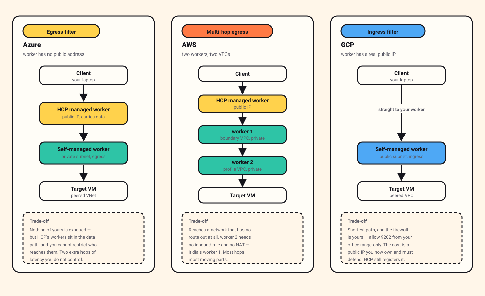

Boundary in Google Cloud: your own front door
Same goal as the Azure build — reach a private VM with no key on your laptop — but this time your session never touches HashiCorp's machines. Your laptop connects straight to a worker you own, behind a firewall you wrote. One config line makes the difference.

Read it, then build it 🛠️
This page is written to be followed along with, not just read. Open the Excalidraw board beside it and work through the steps yourself — every screen I filled in is captured there, in the order I filled it in.
Reading gives you the shape of the thing. Only doing it gives you the understanding. I did not learn any of this by reading, and I do not think anyone does.
New to Boundary? Read What is HashiCorp Boundary? first for the vocabulary. And if you have not done the Azure walkthrough, consider doing it before this one — the contrast between the two is where the understanding actually comes from.
Contents
- The one difference that matters
- Before you start
- Step 1 · Project and APIs
- Step 2 · Two networks
- Step 3 · Firewall rules, the GCP way
- Step 4 · Peering, from both sides
- Step 5 · The machines
- Step 6 · The worker, with a public address
- Step 7 · The ingress filter
- Step 8 · Connect, and prove it
- Google Cloud gotchas
- Clean up
The one difference that matters
In the Azure build, our worker had a private address. Our laptop could not reach it, so the session had to be relayed: laptop → HashiCorp's worker → our worker → target.
Here we give the worker a real, routable public address. Now our laptop can reach it, and the path collapses to laptop → our worker → target.
HashiCorp's control plane is still involved — the worker registers with it and sends heartbeats — but no byte of your session passes through it.

Here is the note I wrote on the board at the moment this clicked:
"Now we can control the self-managed worker ourselves — like allowing only port 9202 from our clients, which we can't do with HCP managed in the previous Azure flow."
That is the real trade, and it is worth being clear-eyed about both halves. You take on a public IP address and the duty to defend it. In exchange, the firewall in front of your session traffic becomes yours to write. In the Azure design you cannot restrict who reaches the relay, because the relay is not yours.
"Public IP" sounds alarming, but the exposure is smaller than it sounds: one port, 9202, open to your office address range and nothing else. That is a much narrower opening than a traditional jump host, which needs SSH open to wherever your people happen to be.
Before you start
- A Google Cloud account with billing enabled.
- An HCP account with a Boundary cluster.
- An SSH key pair:
ssh-keygen -t ed25519 -f ./boundary-gcp -C boundary-worker-gcp - Your own public IP address — visit any "what is my IP" site. You will need it for a firewall rule.
Money. Cheaper than the Azure build, because this design needs no Cloud NAT — the worker has its own public address and the target does not need outbound internet. Still: two VMs left running add up. Set a budget alert and do the clean-up step.
Step 1 · Project and APIs
Google Cloud organises everything into projects. Create a new one — this makes clean-up trivial later, because deleting the project deletes everything in it.
Then enable the Compute Engine API. Google Cloud disables most services by default and you must turn on the ones you need. This is unusual if you come from AWS, where services are simply available. You will be prompted the first time you try to create a VM, but enabling it up front avoids an interruption later.
Step 2 · Two networks
Two VPCs, as in the Azure build, but with different subnet needs.
The boundary VPC
One subnet, and this one is public — the worker needs an external address. When creating the subnet you will see an option called Private Google Access. It controls whether machines with no external IP can still reach Google's own services. Our worker has an external IP, so it does not need this. Leave it off.
The profile VPC
One private subnet, for the target VM. No external addresses, and no route to the internet.
No Cloud NAT needed here. This surprised me. In the Azure build the worker needed a NAT gateway to reach HCP. Here the worker has its own public address, so it reaches the internet directly. And the target does not need outbound access at all. You would only add Cloud NAT if the target VM needed to download packages — which is a real need in production, but not for this build.
A word on routing mode
When creating a VPC, Google Cloud asks whether routing should be regional or global. Regional is the default and the right answer here. In short:
- Regional — each region is handled on its own. Smaller blast radius, no cross-region traffic charges.
- Global — one connection reaches every region in the VPC, traffic hops across Google's backbone, and you pay cross-region egress for the privilege. One region's problem can affect all of them.
Pick regional unless you have a specific reason not to.
Step 3 · Firewall rules, the GCP way
This is where Google Cloud differs most from the other two clouds, and it is worth slowing down for.
In AWS you attach a security group to an instance. In Azure you attach an NSG to a network card. In Google Cloud you do neither. You write a rule that lives on the VPC and says which machines it applies to — by network tag.
Name: allow-client-to-worker
Network: boundary-vpc
Direction: Ingress
Action: Allow
Source: <your office/home public IP>/32
Targets: network tag = vm-self-managed-worker
Protocol: TCP
Port: 9202
Then you tag the worker VM with vm-self-managed-worker, and the rule
applies to it. Tag a second machine the same way and the rule covers that one too,
with no further action.
If you have used Kubernetes, this is a selector, and the model will feel immediately familiar. If you have come from AWS it feels backwards for about a day, and then it feels better than what you had.
There is a second way. Instead of tags you can target machines
by their attached service account — any VM running as
web-sa@project.iam.gserviceaccount.com gets the rule. That is
stronger, because a tag can be added by anyone who can edit the VM, whereas
changing a service account is a permission-controlled action. Tags are fine for
learning; service accounts are the better production answer.
The rules you need
worker VPC
ingress SSH (22) from your public IP → tag: vm-self-managed-worker
ingress TCP 9202 from your public IP → tag: vm-self-managed-worker
egress TCP 9202 to HCP managed workers (registration + heartbeat)
egress SSH (22) to the profile VPC (the actual job)
profile VPC
ingress SSH (22) from the worker only → tag: vm-profile
That second ingress rule — 9202 from your public IP — is the entire
point of this design. It is the line the Azure build cannot express, because there
you would be trying to firewall a machine you do not own.
Two things about how GCP evaluates rules
Implied rules. Every VPC has two invisible rules at the lowest possible priority: deny all ingress, and allow all egress. You cannot delete them. The allow-all-egress one catches people — outbound is open unless you write something to close it.
Priority. Rules have a number, and lower numbers win. If two rules match the same traffic, the lower number decides. Leave everything at the default until you have a reason not to, and when you do need an override, remember that "higher priority" means a smaller number.
Firewall rules in Google Cloud are also stateful: allow a connection in and the replies are automatically allowed back out. You do not write a matching return rule.
Step 4 · Peering, from both sides
Connect the two VPCs so the worker can reach the target. Go to VPC network → VPC network peering, and create a peering.
You must create it twice. Once from the boundary VPC pointing at the profile VPC, and once from the profile VPC pointing back. This is genuinely different from AWS, where you request a peering from one side and accept it from the other. In Google Cloud both ends need their own matching configuration, and until both exist the peering just sits there inactive.
I lost time to this, convinced I had a firewall problem. It was a peering with only one half built.
The good news: once both halves exist, routes are added automatically. No manual route table entries, unlike AWS.
Step 5 · The machines
Two virtual machines this time — no permanent jump host needed.
| Machine | Network | External IP | Network tag |
|---|---|---|---|
| worker | boundary VPC | Yes | vm-self-managed-worker |
| profile VM | profile VPC | No | vm-profile |
When creating each VM, the network tags go under the Networking section, and the SSH public key goes under Security → Manage Access. Attach the key you generated earlier.
Because the worker has a public address, you can SSH to it directly for setup — which is why this build needs no jump host at all. One fewer machine to create, secure and remember to delete.
Step 6 · The worker, with a public address
SSH to the worker using its external address and install the binary:
ssh -i ./boundary-gcp boundary@<worker-external-ip>
sudo apt-get update && sudo apt-get install -y jq unzip
wget -q "$(curl -fsSL \
"https://api.releases.hashicorp.com/v1/releases/boundary/latest?license_class=enterprise" \
| jq -r '.builds[] | select(.arch=="amd64" and .os=="linux") | .url')"
unzip *.zipNow the configuration — and this is the file that makes this build different:
hcp_boundary_cluster_id = "<your-cluster-id>"
listener "tcp" {
address = "0.0.0.0:9202"
purpose = "proxy"
}
worker {
public_addr = "34.18.234.32:9202" # a REAL public address
auth_storage_path = "/home/boundary/worker1"
tags {
automated = ["gcp-cloud"]
owner = ["kst"]
country = ["doha"]
region = ["middle-east"]
}
}
Compare this with the Azure file. Everything is the same shape.
The only meaningful difference is that public_addr is now an address
your laptop can actually reach. That single change is what allows the ingress
design — the client can dial the worker, so the relay through HCP is no longer
necessary.
Install the systemd unit exactly as in the Azure walkthrough, start it, and watch the log:
sudo mv boundary /usr/local/bin/
sudo useradd --system --home /etc/boundary.d --shell /bin/false boundary
sudo chown -R boundary:boundary /home/boundary
sudo systemctl daemon-reload
sudo systemctl enable --now boundary-worker
sudo journalctl -u boundary-worker -f
As before, the node reports that it is not yet authorized. Read the
auth_request_token from the worker's storage directory and paste it
into the admin console under Workers → New.
Step 7 · The ingress filter
Create the credential store and the SSH target as in the Azure build — same steps, same injected credential.
Then, instead of an egress filter, set an ingress worker filter on the target:
"gcp-cloud" in "/tags/automated"The syntax is identical to the egress filter. What differs is which end of the journey it selects. An egress filter picks the worker that makes the final hop to the server. An ingress filter picks the worker that the client is allowed to enter through.
Because our worker is reachable from the client, one worker does both jobs and the middle of the chain disappears.
Step 8 · Connect, and prove it
boundary authenticate password \
-auth-method-id=<your-auth-method-id> \
-login-name=<your-user>
boundary connect ssh -target-id=<your-target-id>You should land on the target VM. Now prove that the path is what we claimed, by looking at where your own laptop is connected. Run this on your laptop while the session is open:
lsof -nP -iTCP -a -c boundary
In the Azure build, the 9202 connection went to an address belonging to HashiCorp.
Here it should go to your worker's public address — the one you
put in public_addr. That is the whole difference, visible in one line
of output.
The worker still holds connections to HCP on 9202, but those are registration and heartbeat traffic only. Your session is not in them.
Try the experiment. Temporarily remove the
9202 from your IP ingress firewall rule and try to connect again. It
will fail — and it will fail in a way that proves your laptop really was talking
directly to your worker, rather than being relayed. Two minutes, and it makes the
architecture concrete in a way that reading cannot.
Google Cloud gotchas
Peering needs both halves
Said already, repeated here because it is the one that will cost you an hour. Configure it from both VPCs.
Egress is allowed by default
The implied rules are deny-ingress and allow-egress. If you assumed outbound was closed until you opened it, that assumption is wrong here, and it is the kind of wrong that does not announce itself.
Tags are how rules find machines
If a firewall rule seems to do nothing, check the VM's network tags before you check the rule. Nine times out of ten the rule is correct and the tag is missing or misspelled — there is no validation linking the two, so a typo simply means the rule matches nothing.
APIs must be enabled
If a resource type is missing from the console, the API for it is probably off. It is not a permissions problem, which is the first thing most people assume.
Routes can be filtered by tag too
Not needed for this build, but worth knowing: Google Cloud routes can also target machines by network tag. That means you can send some VMs out through one path and others through another, in the same subnet. It is a genuinely useful capability with no clean equivalent in the other two clouds.
Clean up
Delete the project. Everything lives inside it, so that one action removes the VMs, the networks, the firewall rules and the peering.
Then remove the worker, target and credential store from the Boundary admin console.
Where to go next. The AWS multi-hop walkthrough is the hardest of the three and handles the case where the target's network has no way out at all. For the comparison of all three designs and how to choose between them, see Who actually carries the packets?